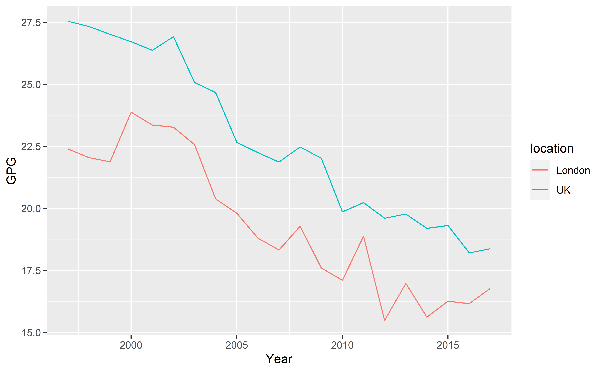
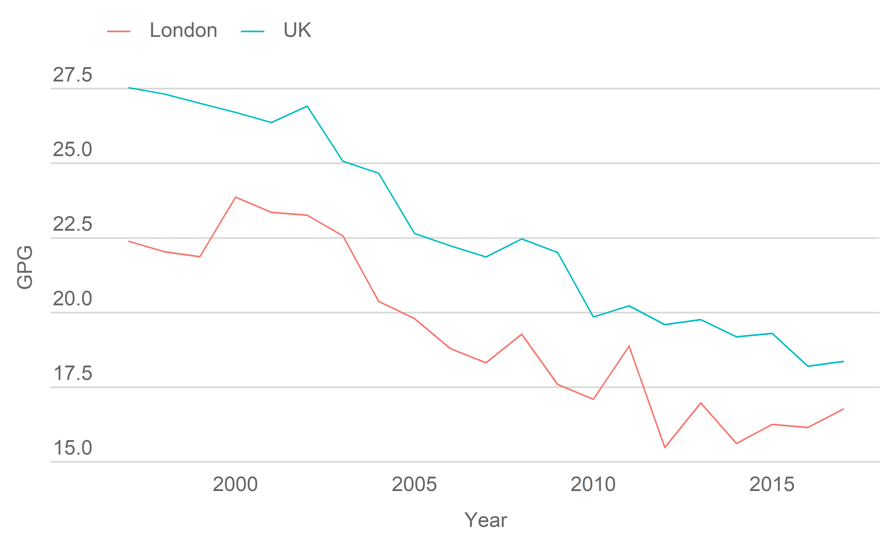
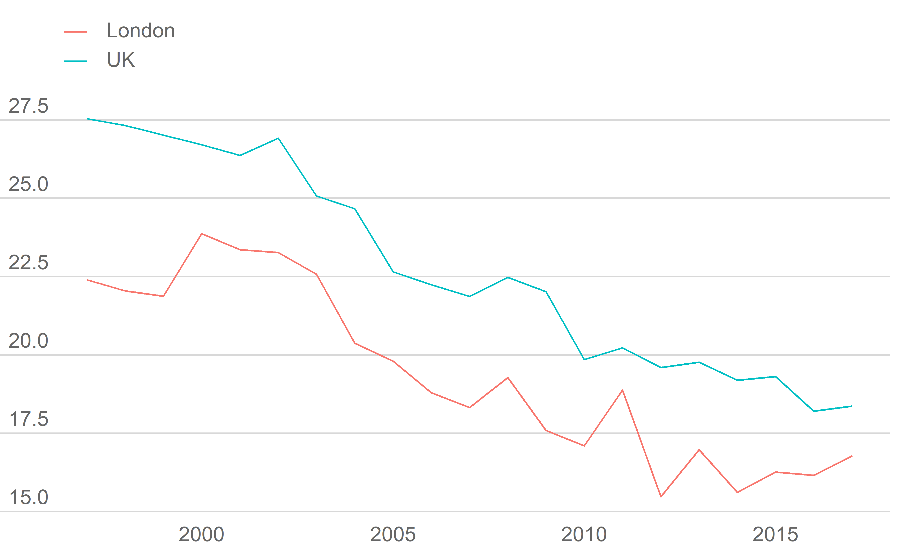
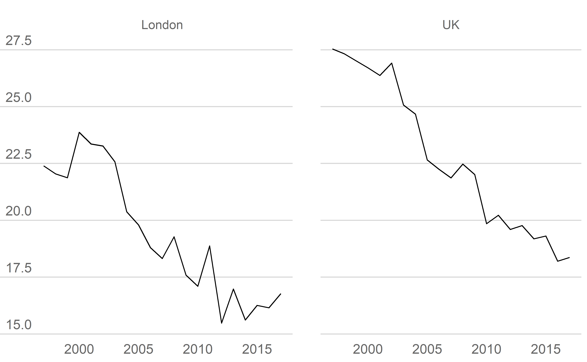

This vignette summarises how to use the custom theme included in gglaplot.
Themes control the overall look of the non-data components of plots. ggplot2 includes various default themes, as well as a framework for editing and building your own, on which theme_gla is built.
How to apply theme_gla to a ggplot object
To illustrate how theme_gla can be used with ggplot plots, we’ll use a dataset comparing the gender pay gap in London and the rest of the UK. Here’s the dataset plotted in standard ggplot.
plot <- ggplot(data = LDNUK, mapping = aes(x = Year, y = GPG, group = location, colour = location)) + geom_line() plot

After installing gglaplot the custom theme can be accessed via the theme_gla() function. The function has been set up in such a way that it can be used without any arguments. The theme can be added onto any standard ggplot object in the same way as the themes built into ggplot.
plot + theme_gla()
With the default settings, theme_gla() changes some basic aspects of the look of the graph, including legend style and location, background colours and gridlines.
Here’s the full argument and default specification for theme_gla():
function (gla_theme = "default", x_axis_title = FALSE, y_axis_title = FALSE,
xgridlines = FALSE, legend = TRUE, base_size = 14, free_y_facets = FALSE,
y_label_length = 100) To change some of the more complicated aspects of the style of the plot, we need to change some of the theme_gla() arguments from their defaults.
Settings in the theme_gla() function
Axis titles
If needed, axis titles can be added to plots with the x_axis_title and y_axis_title arguments. If you’re including a y-axis label you may need to adjust the length of the lines under the y-axis labels
plot + theme_gla(x_axis_title = TRUE, y_axis_title = TRUE, y_label_length = 25)

Gridlines
xgridlines controls whether gridlines appear on the x-axis of the plot.
plot + theme_gla(xgridlines = TRUE)
Legend
legend controls whether the legend appears. Where possible data should be labelled directly instead.
plot + theme_gla(xgridlines = TRUE, legend = FALSE)

If you have particularly long labels in your legend, it can be split over multiple rows by adjusting the guides settings in your plot:
plot + theme_gla() + guides(col = guide_legend(nrow = 2))

Font size
base_size changes the base font size of the plot. The font size of any titles and captions will scale accordingly. Try and get the base_size to match the font size of the document/presentation the plot is being used in.
plot + theme_gla(base_size = 20)
Faceting
Faceting creates small multiples of plots, split into rows and columns by different variables.
Simple facet plots can use theme_gla() with no adjustments.
ggplot(data = LDNUK, mapping = aes(x = Year, y = GPG)) + facet_grid(cols = vars(location)) + geom_line() + theme_gla()

For facet plots which have data in different ranges, free scales may be needed to avoid the data in some facets being squashed. If this is the case the free_y_facets argument in theme_gla should be set to TRUE. This changes the position and alignment of the y-axis labels to a format which works better when the y-axis labels may vary a lot in length.
ggplot(data = LDNUK, mapping = aes(x = Year, y = GPG)) + facet_grid(rows = vars(location), scales = "free_y") + geom_line() + theme_gla(free_y_facets = TRUE)
Each facet can have it’s own set of axis using facet_wrap. These can either be completely free, (i.e. have different ranges), or the ranges can be set using limits in scale_y_continuous.
ggplot(data = LDNUK, mapping = aes(x = Year, y = GPG)) + facet_wrap(facets = "location", scales = "free_y") + geom_line() + theme_gla(free_y_facets = TRUE) + scale_y_continuous(limits = c(0, 30))

If there are many small plots in a facet plot, it’s worth considering scaling down the base_size in theme_gla to stop text looking out of proportion, and to reduce the size of some geoms to avoid losing detail.
How to use theme_gla()
As above, you can just add theme_gla() to each of your ggplot objects. It’s best to add it directly after the call to ggplot so it won’t overwrite any manual changes you make later on. As with other ggplot themes you can make manual changes to them directly. For example, if for a particular plot you don’t want any y-gridlines you can remove them using the ggplot::theme() function:
ggplot(data = LDNUK, mapping = aes(x = Year, y = GPG, group = location, colour = location)) + theme_gla(xgridlines = FALSE) + geom_line() + theme(panel.grid.major.y = element_blank(), axis.ticks.y = element_line(colour = "white"))

You can get more information on how to manually adjust themes in the ggplot documentation. We’ve tried to include the suggestions of the style guide in theme_gla(), but there may be plots it doesn’t quite work for.
Instead of adding theme_gla() to every one of your plots you can also set the theme at the start of your session.